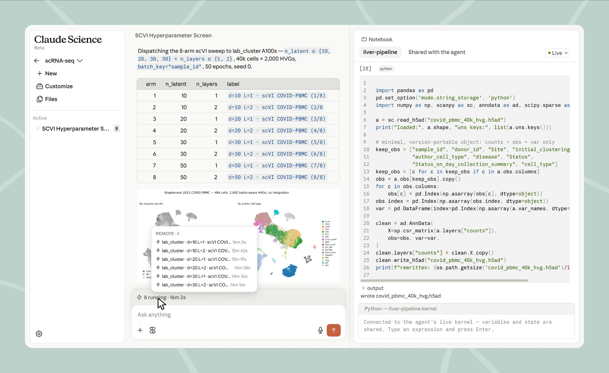
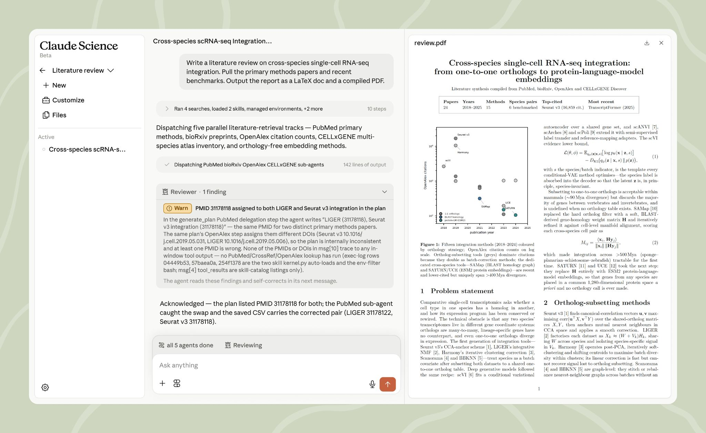

État de l'art du développement avec Claude sur une codebase C de plus de 30 ans liée au calcul scientifique
Richard Sutton (2019)
Les méthodes générales qui exploitent le calcul scalent mieux que l'ingénierie astucieuse spécifique à un domaine.
<claude_behavior> <product_information> Here is some information about Claude and Anthropic's products in case the person asks: This iteration of Claude is Claude Fable 5.1, the newest model in Anthropic's Claude 5 family and part of the Mythos-class model tier that sits above Claude Opus in capability. Claude Fable 5.1 and Claude Mythos 5.1 share the same underlying model. […] Claude is accessible through Claude Code, an agentic coding tool that lets developers delegate coding tasks to Claude from the command line, desktop app, or mobile app […] </product_information> <refusal_handling> […] </refusal_handling> <tone_and_formatting> Claude uses a warm tone […] Claude never curses unless the person asks […] Claude avoids saying "genuinely", "honestly", or "straightforward". […] </tone_and_formatting> <user_wellbeing> […] </user_wellbeing> <evenhandedness> […] </evenhandedness> <knowledge_cutoff> Claude's reliable knowledge cutoff, past which it can't answer reliably, is the end of Jun 2026. […] </knowledge_cutoff> </claude_behavior>
« An extreme example of illegible reasoning. Near the end of training, Mythos starts solving a card puzzle with human understandable language that gradually becomes incomprehensible in most episodes with long reasoning. »
Un modèle plus petit, d'une génération antérieure, avec un autre tokenizer — et il lit sans difficulté.
Model Context Protocol, en Python
from mcp.server.fastmcp import FastMCP
from pyscotch import Graph
mcp = FastMCP("scotch")
@mcp.tool()
def partition(graph_file: str, parts: int) -> list[int]:
"""Partitionne un graphe Scotch en `parts` parties."""
return Graph.load(graph_file).partition(parts).tolist()
Nom, signature, docstring : c'est tout ce que le modèle voit de l'outil.
1. reçu dans le contexte : la fonction, traduite en schéma
{"name": "partition",
"description":
"Partitionne un graphe Scotch
en `parts` parties.",
"input_schema": {
"type": "object",
"properties": {
"graph_file": {"type": "string"},
"parts": {"type": "integer"}},
"required": ["graph_file", "parts"]}}
La docstring est devenue la description : c'est elle qui décide si l'outil sera appelé.
2. appel par le modèle et réception du résultat
{"type": "tool_use",
"id": "toolu_01…",
"name": "partition",
"input": {"graph_file": "ring.grf",
"parts": 2}}
⇩ votre code l'exécute ⇩
{"type": "tool_result",
"tool_use_id": "toolu_01…",
"content": "[0, 0, 0, 0, 1, 1, 1, 1]"}
Le résultat repart dans le contexte, le modèle continue.
| Modèle | Harnais accordé |
|---|---|
| Claude | Claude Code |
| GPT | Codex CLI |
| autres / locaux | pi, opencode — harnais transparents |
4 février 2026, GitHub : « you can run multiple coding agents directly inside GitHub, GitHub Mobile, and Visual Studio Code […] agents like GitHub Copilot, Claude by Anthropic, and OpenAI Codex »
« seasoned professionals accelerate their work with LLMs while staying proudly and confidently accountable for the software they produce »
Simon Willison — Vibe engineering, 7 octobre 2025 — par opposition au vibe coding
« You could have thirty agents working for you simultaneously. You cannot watch all of them and micromanage each one. You wouldn't do this with your human team either. Instead: write a better harness. »
@mrexodia — Vibe Engineering: What I've Learned Working with AI Coding Agents
« Bad programmers worry about the code. Good programmers worry about data structures and their relationships. »
Linus Torvalds — liste git, 2006
Moi → l'agent (deux prompts, tels quels)
L'agent → son sous-agent (le prompt exact, 6 700 caractères)
Deux lignes en vrac, un cahier des charges. La mise en ordre, c'est lui qui la fait.
from hypothesis import given, strategies as st
@given(st.lists(st.integers() | st.floats()))
def test_sort_correctness_using_properties(lst):
result = my_sort(lst)
assert set(lst) == set(result)
assert all(a <= b for a, b in zip(result, result[1:]))
| Tests classiques | Fuzzing | PBT | Formel | |
|---|---|---|---|---|
| Entrées | valeurs en dur | machine | machine (stratégies) | toutes (symbolique) |
| Oracle | assertions précises | crash only | propriétés | spécification |
| Domaine | partout | parsers, sécu | libs, data, métier | aéro, crypto |
| Coût | faible | moyen | faible–moyen | élevé |
claude/…)module.h : 1 constante, 1 type, 10 fonctions dmeshSignalé le 11, corrigé le 11.
@given(graph_data=simple_graph(min_vertices=2, max_vertices=20))
def test_coloring_no_adjacent_same_color(self, graph_data):
num_vertices, edges = graph_data
graph = Graph.from_edges(edges, num_vertices=num_vertices)
coloring, num_colors = graph.color()
for u, v in edges:
assert coloring[u] != coloring[v]
L'invariant du coloriage. Le test C de Scotch, lui, vérifiait le code de retour et imprimait un histogramme.
Scotch 34ea137 (14 janv. 2026, la veille du fix) · pyscotch a32f242 (déc. 2025) · Hypothesis 6.168, seed 1, verbosité debug, un cas par ligne. Premier échec au cas n°19 : 17 sommets, 38 arêtes. Puis la réduction : les arêtes tombent une à une, (17, [(5, 10)]), (17, [(1, 10)]), 17 → 15 → 13 → 11 sommets. 107 cas, 16 réductions, 3 s : graph_data=(11, [(1, 10)]). Sur v7.0.14 : 100 exemples, 0 échec.
- if (colotax[vertend] >= 0)
- continue;
+ if ((coloend >= 0) && /* If vertex has been colored */
+ (coloend < colonum)) /* In a former pass */
+ continue; /* Do not consider it any longer */
L'analyse de décembre était la bonne. Le vérificateur d'abord, le fix le lendemain. 25 mars 2026 : xfail retiré, test vert.
c4ffein/scotch, branche add-output-validity-checks : 23 tests C reçoivent des assertions, +523 lignes
static void
checkOrder (const SCOTCH_Num * const permtab, const SCOTCH_Num * const peritab,
const SCOTCH_Num baseval, const SCOTCH_Num vertnbr)
{
for (vertnum = 0; vertnum < vertnbr; vertnum ++) {
/* ... permtab[vertnum] et peritab[vertnum] dans [baseval, baseval + vertnbr) ... */
if (peritab[permtab[vertnum] - baseval] != vertnum + baseval) {
SCOTCH_errorPrint ("checkOrder: permutation not bijective at vertex " SCOTCH_NUMSTRING, vertnum + baseval);
exit (EXIT_FAILURE);
}
}
}
rc == 0 (success) but permtab[13] == 0xBBBBBBBB (uninitialized). Approximately 25% of random sparse graphs with 4-20 vertices trigger it.git log du fork : 2 avr. « hegel report » · 3 avr. « gaslighted again by me good Claude » · 5 avr. « add hgraph_order_cp.c fix actually »
static void test_add_commutes (hegel_testcase *tc) {
int a = HEGEL_DRAW_INT (-1000, 1000);
int b = HEGEL_DRAW_INT (-1000, 1000);
HEGEL_ASSERT (a + b == b + a, "a=%d b=%d", a, b);
}
int main (void) { hegel_run_test (test_add_commutes); return 0; }
hegel_schema_t edge_schema = HEGEL_STRUCT (EdgePair,
HEGEL_INT (0, MAX_VERT - 1),
HEGEL_INT (0, MAX_VERT - 1));
graph_schema = HEGEL_STRUCT (Graph,
HEGEL_INT (3, MAX_VERT),
HEGEL_ARRAY_INLINE (edge_schema, sizeof (EdgePair), 0, MAX_EDGES));
/* ... build CSR, SCOTCH_graphOrder with SCOTCH_STRATDISCONNECTED ... */
memset (permtab, 0xBB, nvert * sizeof (SCOTCH_Num)); /* sentinel */
hegel_note (tc, "MINIMAL nvert=%d nedges=%d edges=[...]"); /* printed on the final replay only */
enregistré aujourd'hui avec le hegel-c de juillet 2026, sur le Scotch d'avant le fix — la branche du 2 avril faisait la même chose, en moins propre
Scotch v7.0.11 (avant le fix du 15 avril) · hegel-c ce16904, moteur hegel-rust v0.17.4. Cas n°6 : premier échec sur 20 sommets. Cas n°185 : déjà 3 sommets, 1 arête. 10 175 cas en 17 s, puis MINIMAL nvert=3 nedges=1 edges=[(1,2)] — 6 runs sur 6. Sur v7.0.14 : 200 cas, rien.
Fausse piste : les sommets isolés. Vraie cause : le chemin compression de hgraphOrderCp ignore ordenum.
hgraphOrderSi | peritab[ordenum + i] | ✓ |
hgraphOrderHf / Hd | peritab + ordenum | ✓ |
hgraphOrderNd | récursif, ordenum ajusté | ✓ |
hgraphOrderCc | ordenum + roottab[rootnum] | ✓ |
hgraphOrderCp, sans compression | transmis à la sous-stratégie | ✓ |
hgraphOrderCp, avec compression | ignoré | ✗ |
- for (coarvertnum = coargrafdat.s.baseval, finevsizsum = 0;
+ for (coarvertnum = coargrafdat.s.baseval, finevsizsum = ordenum;
Conditions : STRATDISCONNECTED + ≥ 2 composantes + une composante non première qui compresse (une paire K2 suffit). Présent depuis v6.0 au moins. Corruption silencieuse : rc = 0.
+ if (finegrafptr->s.vertnbr <= 2) /* Do not lose time when compression is irrelevant */
+ return (hgraphOrderSt (finegrafptr, fineordeptr, ordenum, cblkptr, paraptr->stratunc));
[...]
- for (coarvertnum = coargrafdat.s.baseval, finevsizsum = 0; /* Compute initial indices for inverse permutation expansion */
+ for (coarvertnum = coargrafdat.s.baseval, finevsizsum = ordenum; /* Compute initial indices for inverse permutation expansion */
Le mainteneur reprend le fix, ajoute un court-circuit pour ≤ 2 sommets, et le test qui manquait. Le même jour. Signalé le 5, corrigé le 15.
Machine sans aucun Scotch. uv venv, uv pip install "pyscotch[parallel]" : pyscotch 7.0.4 depuis PyPI, mpi4py en wheel binaire, rien à compiler. Cinq lignes de Python : parts: [0 1 1 0] avec le Scotch 7.0.13 embarqué dans la wheel. 1,4 s.
pyscotch doctorJuste après l'install : la wheel, « No problems detected ». Puis PYSCOTCH_PARALLEL=1 : « Loaded NO », le fichier qui manque, et la commande exacte qui le construit. Le diagnostic est la documentation.
pyscotch scotch buildpyscotch scotch build --parallel --use : preflight, source Scotch 7.0.13 téléchargée depuis gitlab.inria.fr (8,3 Mo, sha256 vérifié), aucun quickfix nécessaire pour cette version, make libscotch + libptscotch, sélection. 1 min 00 s sur 8 cœurs, sans root. Puis doctor en parallèle, et un Dgraph 8×8×8 partitionné en 4 sous mpirun -n 2.
8 workflows GitHub Actions. Deux jumeaux : « Build Scotch from CLI » installe depuis le dépôt et garde le code, « Verify published PyPI release » installe depuis PyPI et certifie le paquet publié. L'oracle, à chaque push : les outils de Scotch eux-mêmes, et 14 sorties dorées.
| nov. 2025 | pyscotch, jour 7 | premier bug upstream, corrigé le jour même |
| déc. 2025 | Hypothesis sur le wrapper | coloriage invalide → corrigé en janv. 2026 |
| mars 2026 | Claude relit les tests C de Scotch | 23 tests reçoivent des assertions |
| avr. 2026 | hegel en C, sur le fork | permutation invalide, rc = 0 → corrigé en 10 jours |
| avr. 2026 | hegel-c | le même bug, retrouvé seul, réduit à 3 sommets |
| juil. 2026 | pyscotch 7.0, le balayage | 6 bugs chez nous, 6 signalements upstream |
| juil.–août 2026 | tests différentiels | l'oracle, c'est gpart / gord / gmap |
| août 2026 | la même tâche, deux fois | épilogue |
3 commits upstream « [report C. Pellegrini] » · 3 autres corrections tracées à nos signalements · 4 toujours ouverts en v7.0.14
| Bug | Méthode | Sévérité | Upstream |
|---|---|---|---|
module.h : 12 macros de renommage manquantesnov. 2025 | build 32+64 bits, puis lecture | lien impossible en build suffixé | corrigé le jour même — f7cd80c ✓ crédité |
graphColor : voisins du même passagedéc. 2025 | Hypothesis | coloriage invalide, silencieux | corrigé 15 janv. 2026 — e0a90c7 |
hgraphOrderCp : off-by-ordenumavr. 2026 | hegel en C, puis lecture | permutation invalide, rc = 0 | corrigé 15 avr. 2026 — 0642921 + test ✓ crédité |
memFree, meshBuildElem hors table de renommagejuil. 2026 | vérificateur de signatures | 7.0.12 ne compile pas en RENAME_ALL | corrigé le lendemain — 770f26e, eef80bd |
contextOptionSetNum : switch (optival)juil. 2026 | lecture | cascade DETERMINISTIC jamais appliquée | ouvert en 7.0.14 |
contextAlloc hors table de renommagejuil. 2026 | balayage library.h / module.h | lien impossible en build suffixé | ouvert |
libscotch.so sans NEEDED zlib/libm/pthreadjuil. 2026 | build des wheels | dlopen échoue en liaison immédiate | ouvert |
| 8 fonctions publiques absentes des manuels juil. 2026 | génération de la doc | doc | ouvert |
archDecoArchBuild : mauvais domaines pour les distancesaoût 2026 | ? | distances fausses | corrigé 18 août 2026 — 911ebdf ✓ crédité |
| 24 août, 21:18 | l'ingénieur commit son fix sur sa machine — adb2b64 « Bugfix: base treetab in dorderTreeDist() » |
| 25 août, 11:54 | clone de master depuis mon téléphone : HEAD = 9259939 (5 août). Le fix n'y est pas |
| 25 août, 11:55 | la tâche de François, collée telle quelle |
| 25 août, 12:09 | patch + rapport + test MPI poussés. 14 minutes |
| 25 août, 20:50 | François refactore les deux routines par-dessus la version de l'ingénieur — 2b1a9d8 |
| 26 août | dorderTreeDist() documentée dans le manuel de maintenance — 410cd12 |
| 27 août | push upstream, v7.0.14 |
Heures de Paris (UTC+2). Aucun des deux n'a vu l'autre : le seul accès réseau de la session vers Scotch est le clone, et le log brut le montre.
Subject: [PATCH] Base the tree array returned by dorderTreeDist(), as documented
src/libscotch/dorder_tree_dist.c | 19 ++++++++++++++-----
+ baseval = grafptr->baseval;
for (dblkglbnum = 0; dblkglbnum < dblkglbnbr; dblkglbnum ++) {
- srt1glbtab[2 * dblkglbnum + 1] = dblkglbnum;
+ srt1glbtab[2 * dblkglbnum + 1] = dblkglbnum + baseval;
[...]
+ treeglbtax = treeglbtab - baseval; /* TRICK: based accesses to user arrays */
+ sizeglbtax = sizeglbtab - baseval;
Base the tree array returned by dorderTreeDist(), as documented
The user manual states that, in the tree array filled by
SCOTCH_dgraphOrderTreeDist(), "all node indices start from baseval".
Yet, dorderTreeDist() numbered the permuted column block indices from
0, ignoring the base value of the distributed graph passed as
parameter, whose pointer was hitherto unused.
Father indices stored in the tree array are now based with respect to
grafptr->baseval, and the result arrays are accessed through based
pointers so that the entry for column block (baseval + i) remains at
array slot i. The father index of the root of the tree remains -1,
irrespective of the base value, as documented. Callers that already
handled based indices, such as ParMETIS_V3_NodeND(), which subtracts
the base value from tree array values, are unaffected for the 0-based
case and now behave correctly for the 1-based case.
| L'ingénieur (Sonnet 5) | Moi (Fable 5, téléphone) | |
|---|---|---|
| Commit | adb2b64, 24 août 21:18 | patch dans playground, 25 août 12:09 |
| Temps | une journée (dit François) | 14 min entre le brief et le patch |
| Fichiers | 3 (dorder_tree_dist.c, dorder.h, wrapper public) | 1 |
| Test livré | non | oui : programme MPI + rapport |
| Merge | upstream, v7.0.14 | jamais : arrivé après |
Identique, ligne pour ligne : dblkglbnum + baseval, puis treeglbtax = treeglbtab - baseval. La racine reste à −1. Jusqu'au commentaire /* TRICK: ... */.
L'ingénieur a fait, et pas moi
grafptr devenu inutile : baseval lu sur ordeptr. Prototype et wrapper changés. Moins de surface.restrict sur cblkdsptab, qui aliasait dblkcnttab dans la même allocation. Un comportement indéfini latent, hors sujet, corrigé au passage.J'ai fait, et pas lui
grafptr->baseval, puisque la tâche disait « le champ du graphe grafptr passé en paramètre ». Il a lu l'intention ; j'ai lu le texte.orderTree() le faisait déjà en séquentiel, le wrapper ParMeTiS soustrayait déjà baseval.PORTING.md (motifs Zig → Rust) et LIFETIMES.tsv (durée de vie de chaque champ)« This would've taken 3 engineers a year. »— Jarred Sumner, créateur de Bun
specs/api : openapi.yml + 13 fichiers Hurl (source de vérité)specs/e2e : 15 suites Playwright + SELECTORS.md pour les fronts« I think we'll be there in three to six months—where AI is writing 90 percent of the code. And then in twelve months, we may be in a world where AI is writing essentially all of the code. »
Dario Amodei — Council on Foreign Relations, 10 mars 2025
« essentially all » ?..« Thus, it's my guess that powerful AI could at least 10x the rate of these discoveries, giving us the next 50-100 years of biological progress in 5-10 years. »
Dario Amodei — Machines of Loving Grace, octobre 2024

Un balayage à 8 bras envoyé sur les A100 du cluster du labo, le notebook partagé avec l'agent, en direct. Le compute, c'est le vôtre.

Cinq agents en parallèle, et un relecteur qui signale un PMID attribué à deux papiers — les relecteurs adversariaux de Bun, version labo.
{kind=link}